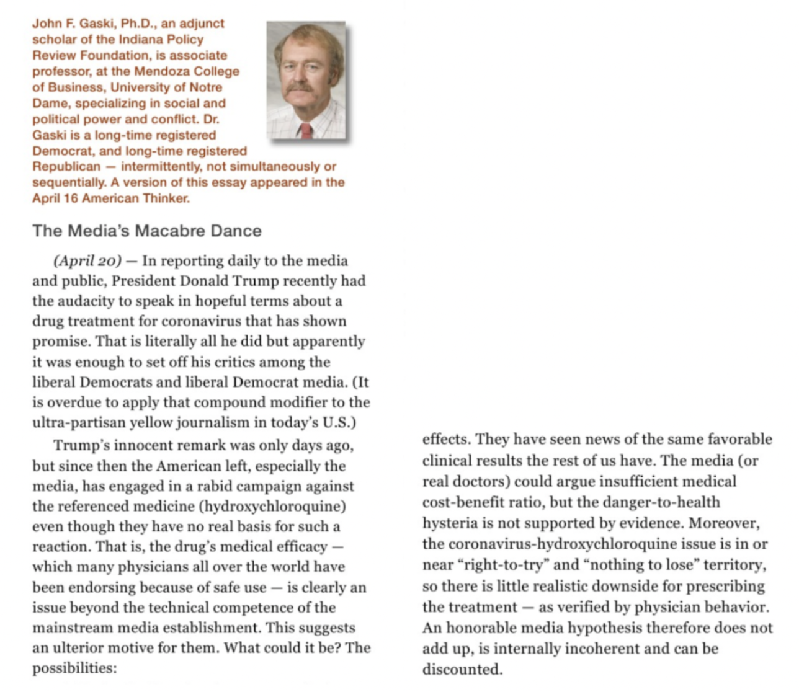

Fauxperts
- Image 1:Pioneer Institute. Fake Experts.
- Image 2:Indiana Review Article by Fauxpert.
Constructing the Fauxpert
">
Hannah Arendt from The Human Condition
The manufacturing of expertise is a foundational requirement for academic and professional research publications. The SPN hires experts and professionals with advanced degrees to write articles, commentaries, and misleading research reports for its websites. University faculty and professional experts publish misleading content that constructs and sustains an illusion of credibility over a long period of time. Rebkah Wilce declares that "Time and time again, the mainstream media interviews SPN 'experts' as though they are objective scholars and not as the partisan players they sometimes appear to be" (Web). Experts who work for the SPN use their authority and reputation to promote and advance misleading arguments and claims that fall well outside their expertise. The SPN also produces a variety of genres associated with highly credible and respected research from academic and professional communities. For example, in “When Red State Governors Act Like Blue,” an article published by the Indiana Policy Review , Dr. Richard Moss, a surgeon, makes questionable claims about Covid.
The presence of an expert in a SPN journal article gives the article some level of authority. When academic faculty and professional researchers assist in designing misleading content (using specific genres of authority), they create layers of disinformation that that are difficult to identify and pull apart. This is important because disinformation is designed to change minds over time so it benefits from being difficult to identify. Experts3433434434 filter and sanitize misleading content so that it can take root in media ecosystems. The Indiana Policy Review appropriated Dr. Moss's medical credentials to spread disinformation about Covid. Moss's medical degree disguises an opinion about Covid as sound medical advice. Calling the Indiana Policy Review a journal is also highly misleading. In another article from the journal titled “Armageddon for Red China” Dr. Moss promotes a conspiracy theory about China making Covid in a lab and spreading it around the world. He refers to Covid as the Chinese Virus, further amplifying conspiracy theories about Covid that have been promoted across alternative media outlets that have coordinated disinformation narratives about Covid. Repeating falsehoods about Covid across platforms over time is an attempt dispute facts about Covid and replace them with alternative facts.
The Pioneer Institute (PI) provides a list of experts on its website to demonstrate that it consults with a team of objective academic and professional researchers. Below is a list of experts who contribute to the PI's content; however, there are no contributions to the PI from anyone on the list in Figure 2 on its website. Providing names of experts on the website signals to users the presence of expertise. Again, the publications and content on the websites are less important than the manufacturing of ethos and credibility so that audiences trust the SPN. The longer misleading content exists in the media, the more momentum it gains.
Figure 1: Pioneer Institute. Experts. Accessed 6-18-2020.
The Buckeye Institute (BI) also relies on experts with advanced degrees to produce economic research. Experts like Andrew Kidd help construct an image of credibility for the SPN. The BI is not an academic institution or university, or a research institute. It is a non-profit think tank that hires well-educated individuals like Kidd to generate and endorse misleading content. The BI is also appropriating itself with Ohio's flagship university, Ohio State University, to manufacture the appearance of an affiliation with a research institution. These layers of illusion can make it difficult to identify the SPN as more than a biased, political think tank that spins information. When audiences visit SPN websites or come across content from the SPN on another platform and see that the writers and researchers have advanced degrees, or that a writer is affiliated with a prestigious research university like Notre Dame, they are likely to relax their critical faculties and habits of mind and trust that source. Experts can deactivate someone's critical habits of mind and make them overlook problematic content. It is the committment to establishing trust with audiences over time and the deliberate spreading of misleading content that make the SPN a disinformation network.
In an article in the Indiana Policy Review Journal , John F. Gaski, a business professor from Notre Dame, argues that hydroxychloroquine is scientifically safe for treating Covid and poses no danger to the public, even though Gaski's Ph.D. is in business and not virology. Audiences need to determine how an expert's specialization aligns with the arguments and claims they make and determine if their expertise extends beyond a disciplinary boundary. Gaski's credentials and affiliation with a unviersity enhances debunked claims about a specific treatment for Covid. It is this insistence to promote false information across platforms over time that classifies the SPN as a disinformation network.
Pierre notes that there are now more anti-vaccine search results on Google than scientific research results on vaccines because of this insistence on platforming treating alternative facts (p. 52).

Figure 2: Gaski as Expert. Accessed 6-18-2020.
Questionable claims from an expert about Covid, couched inside a journal article, create two additional layers of disinformation that have to be peeled back and exposed, which takes labor and time. Many readers rely on traditional markers of credibility like the author's education and expertise to determine the value of a published source. Bakir and McStay reiterate how misleading information about Covid has been used over and over to sow distrust in legacy media and government policies and recommendations (p. 191). Experts like Gaski, Moss, and Kidd write research reports and documents for the SPN that mislead audiences. Accounting for how expertise is established is an important technical literacy for recognizing disinformation networks. Every SPN website provides a list of experts who have earned PhD's, graduate degrees, or MD's. The presence of these credentials is misleading. Knowing how to verify the application of expertise and how expertise enhances the credibility of a disinformation network is a form of crap detection.